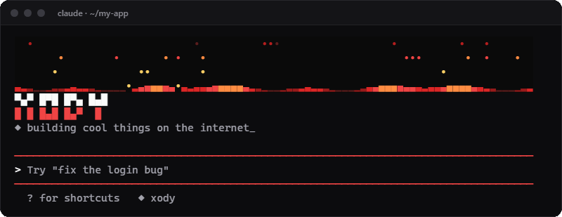
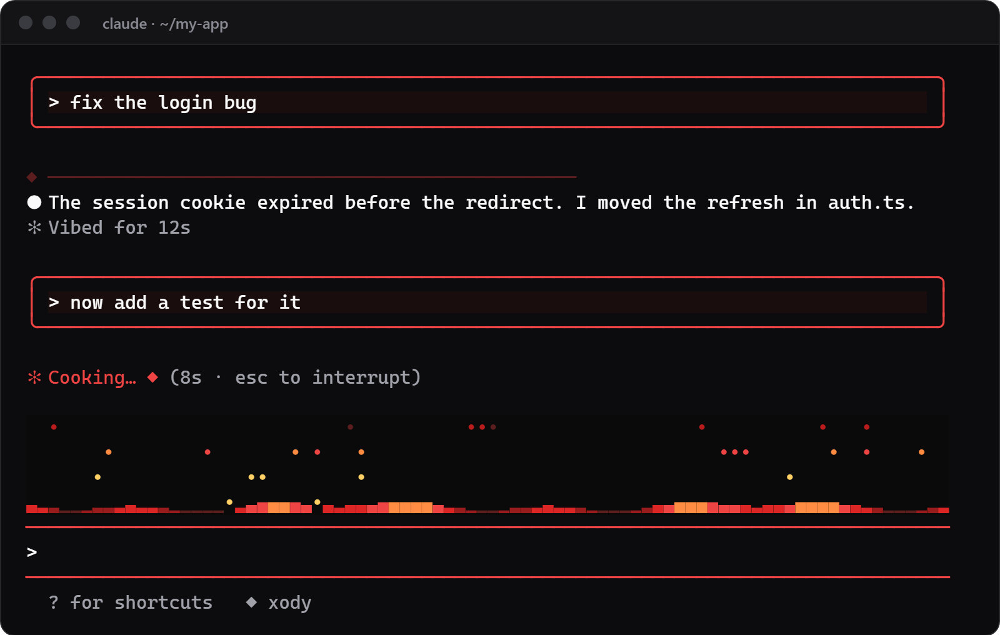
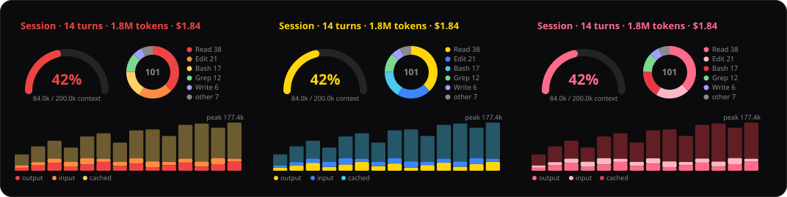

Six animated themes for Claude Code
Pick one in /theme and the whole CLI restyles: an animated scene above the prompt, a boot banner, themed spinner words, prompt cards and more.
/plugin install theme-pack --marketplace CodySpooner/ClaudeCodeThemes 
✻Vibing… spinner words change with the theme
Try one. This whole page changes with it.
What you get
Every picture here is rendered from the theme's own drawing code, so the colors, banners and scenes are exactly what the theme draws.

Xody
theme-packRed on black. Embers rise off a bed of glowing coals, cooling from gold to deep red as they climb, under a XODY banner.
Spinner words
Activity bar, with the Desktop HUD
Scene: Layers of flame throwing embers
On each tool call: A fireball
Animated strip in the desktop app
Activity bar

What each theme changes
| Change | Sakura, Voltage, Royal, Crunch, Xody | Hacker |
|---|---|---|
| Colors across Claude Code | Yes | Yes |
| Animated scene above the prompt | Yes | Yes |
| Boot banner until your first prompt | Yes | Yes |
| Themed spinner and "done" words | Yes | No |
| Your prompts framed in cards | Yes | No |
| A themed divider opening each reply | Yes | No |
| Theme badge next to your modes | Yes | No |
| Animated strip in the desktop app | Yes | No |
| Activity bar, with the Desktop HUD | Yes | Yes |
Desktop HUD
An optional extra for the Claude desktop app. It works with any theme, and each theme here gets its own look.
The activity bar
It sits above the prompt and shows what Claude is doing. It stays calm while Claude is idle, picks up while Claude works, and fires a burst on every tool call.
The progress rail
One segment for each step of Claude's task list, and one dot for each subagent. Finished pieces fill in, and failed subagents turn red.


/dashTokens per turn, context used, cost and the tools Claude called/filesA heatmap of the files Claude read or edited this session/actionsA dock of one-click commands and saved prompts/hudAll three
Install
You need Claude Code with plugin support. These themes are tested on Claude Code 2.1.316. theme-pack has Sakura, Voltage, Royal, Crunch and Xody, and hacker-terminal has Hacker, so install one or both.
In a Claude Code session
/plugin install theme-pack --marketplace CodySpooner/ClaudeCodeThemes /plugin install hacker-terminal --marketplace CodySpooner/ClaudeCodeThemes The first time, answer y to add the marketplace, then choose user scope for all your projects.
From a shell
claude plugin install theme-pack --marketplace CodySpooner/ClaudeCodeThemes claude plugin install hacker-terminal --marketplace CodySpooner/ClaudeCodeThemes claude plugin install desktop-hud --marketplace CodySpooner/ClaudeCodeThemes In the desktop app
- Click + next to the prompt box, then Plugins.
- Click Add marketplace and enter
CodySpooner/ClaudeCodeThemes. - Click Add plugin for
theme-pack,hacker-terminal,desktop-hudor all three.
- Run
/theme. The six are listed with Claude Code's own themes. - Pick one. Its banner greets you until your first prompt.
- Start typing. The scene keeps animating above the prompt.
Help
Go back to normal
/theme and pick one of Claude Code's own themes. All the extras switch off with it.Update or uninstall
To update, run this, then restart Claude Code:
claude plugin update theme-pack@claude-code-themesTo uninstall, run this, then pick another theme in /theme:
claude plugin uninstall theme-pack@claude-code-themesFor Hacker, use hacker-terminal@claude-code-themes instead, and for the HUD, desktop-hud@claude-code-themes.
The themes aren't listed in /theme
/reload-plugins or restart Claude Code. claude plugin list shows whether the pack is installed and enabled.Nothing moves
Boxes instead of petals or katakana
The banner disappeared
No progress rail
desktop-hud installed.